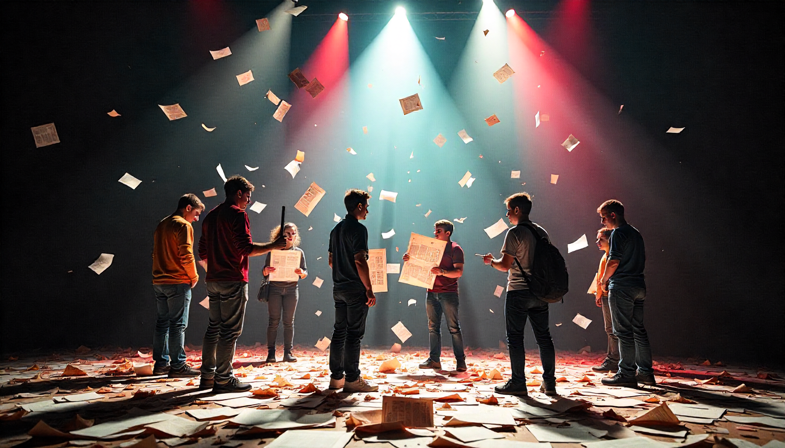
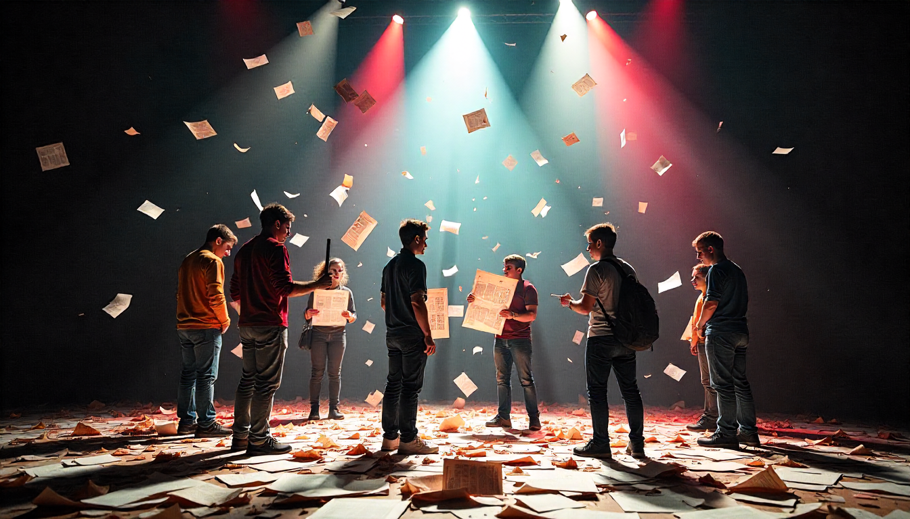
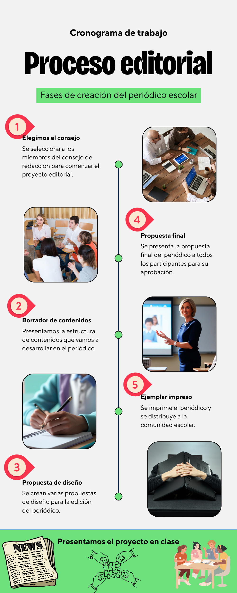

Este recurso se ha generado a partir de IA de Freepik

Este recurso se ha generado a partir de IA de Freepik
Tras la creación de los grupos de una manera aleatoria debemos de comenzar nuestro reto de crear un periódico. Para eso, cada persona del grupo deberá de asumir un rol de trabajo en función de lo que vimos en la composición del Consejo de Redacción, ese rol vinculará también a cada persona con los aspectos que tendrá que desarrollar durante la actividad. Deberéis de realizar esta actividad en la tarea específica creada al efecto en Classroom, la cual no tendrá una calificación pero que es imprescindible para el desarrollo de la misma. El/La Jefe/Jefa de Redacción se encargará de representar al grupo, y será quien a través de classroom entregue las diferentes tareas.
Comenzamos el trabajo debatiendo en el grupo cómo vamos a enfocar nuestro trabajo, debemos de diseñar paso a paso el periódico, desde la portada a la contraportada. Como ya indicamos en apartados anteriores, nuestro periódico va a estar enmarcado en el comienzo del siglo XX, un difícil contexto con la Primera Guerra Mundial y el desarrollo de la Revolución Rusa, que tendrá una importante impronta en el conflicto mundial.
A partir de la estructura del periódico, debemos pensar qué temáticas vamos a tratar, cómo queremos tratarlas... una trabajo del Consejo de Redacción, que deberá determinar trabajando en equipo los diferentes aspectos a desarrollar en la tirada de nuestro ejemplar, en la línea de lo que se nos ha explicado en apartados anteriores.
Esta primera propuesta de trabajo debemos de presentarla para tener el visto bueno y comenzar la elaboración de este ejemplar. No es necesario tener cerrado ninguno de los apartados, sino saber qué temáticas vamos a desarrollar, entrevistas, crónicas, noticias, portada, contraportada, editorial... para que una vez que obtengamos el visto bueno nos pongamos manos a la obra. Habrá que entregar esta propuesta a través de la tarea creada al efecto en classroom.
El diseño de nuestro periódico también es un elemento clave a tener en cuenta, pues es la imagen que vamos a intentar transmitir a nuestros/as lectores/as. Por eso debemos de ser muy cuidadosos a la hora de elegirlo. De la misma manera, ese diseño condicionará los espacios que vamos a utilizar para los diferentes apartados del periódico. Pasa ello podemos utilizar diferentes tipos de aplicaciones, las recomendadas preferentemente al ser gratuitas y permitir que descarguemos lo trabajado en pdf son CANVA y SCRIBUS. Aunque si conoces otra con la que te vaya mejor pues genial, pero deberás de comunicarlo.
Canva
Canva es la opción más sencilla y recomendable si buscas un editor en línea con una curva de aprendizaje mínima y resultados visualmente atractivos. Puedes encontrar tutoriales en Youtube para la elaboración.
Facilidad de Uso: Cuenta con una interfaz intuitiva de arrastrar y soltar y numerosas plantillas de periódicos o boletines que facilitan el proceso de diseño.
Funcionalidad Gratuita: La versión gratuita es muy completa y permite realizar el diseño completo.
Exportación a PDF: Permite descargar el trabajo realizado en formato PDF de alta calidad para impresión o distribución digital.
Acceso: Puedes acceder a Canva desde cualquier navegador web.
Scribus
Scribus es una alternativa de código abierto a programas profesionales como Adobe InDesign. Es ideal si requieres un control más avanzado sobre la maquetación y la tipografía, aunque tiene una curva de aprendizaje ligeramente mayor que Canva. Puedes encontrar numerosos tutoriales en Youtube para su elaboración.
Software Descargable: Es un programa que se instala en tu ordenador (compatible con Windows, macOS y Linux).
Control Profesional: Ofrece herramientas de maquetación profesionales para un diseño más detallado y personalizado del periódico.
Exportación a PDF: Incluye opciones avanzadas para exportar a PDF, esenciales para la impresión profesional.
Acceso: Puedes descargar el software desde la página oficial de Scribus.
De la misma manera que en casos anteriores deberás de entregar la propuesta a través de la tarea realizada en classroom.
La última etapa del proyecto editorial es la presentación en clase del trabajo realizado, analizando todo el proceso hasta llegar a la finalización del mismo, explicando igualmente los contenidos que acompañan a este primer número. Para cada exposición se dispondrá de 20 minutos, pudiendo posteriormente abrirse un debate sobre la elaboración y/o contenidos.
La presentación por un lado, y el resultado final de vuestro trabajo -el ejemplar impreso- por otro, serán evaluados también por vuestros/as compañeros/as. Llegando así al final de esta apasionante aventura y siendo el principio de otras posibles.

Obra publicada con Licencia Creative Commons Reconocimiento Compartir igual 4.0